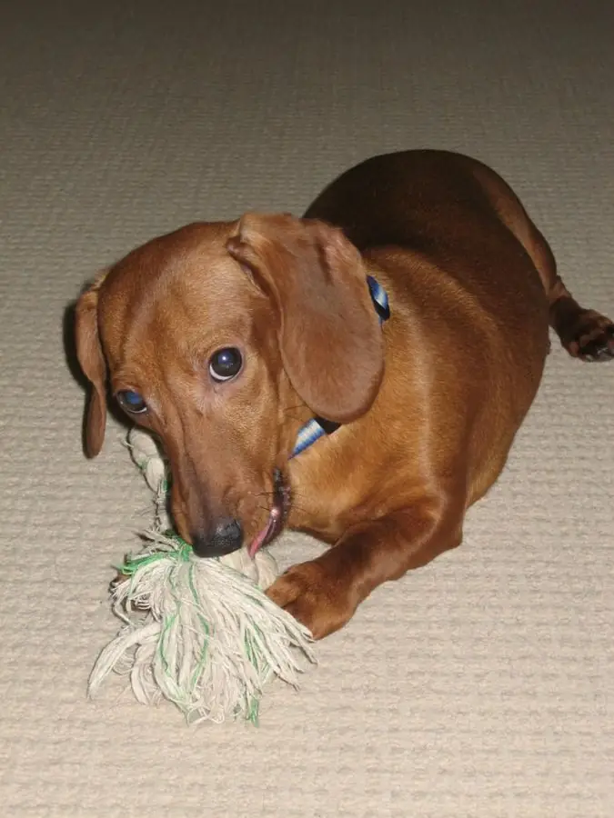
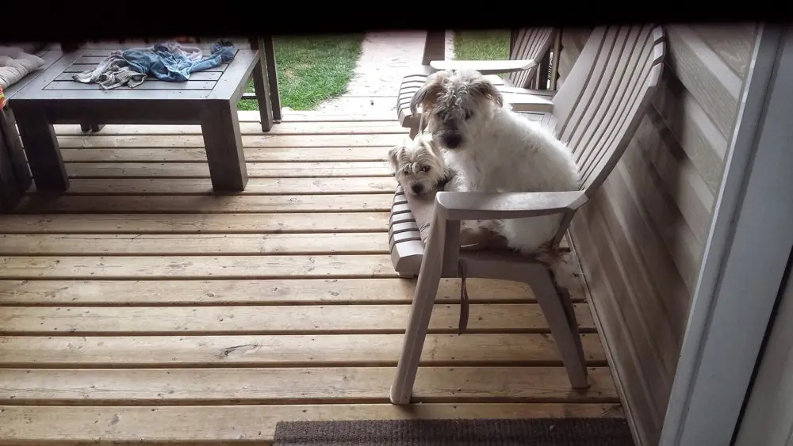
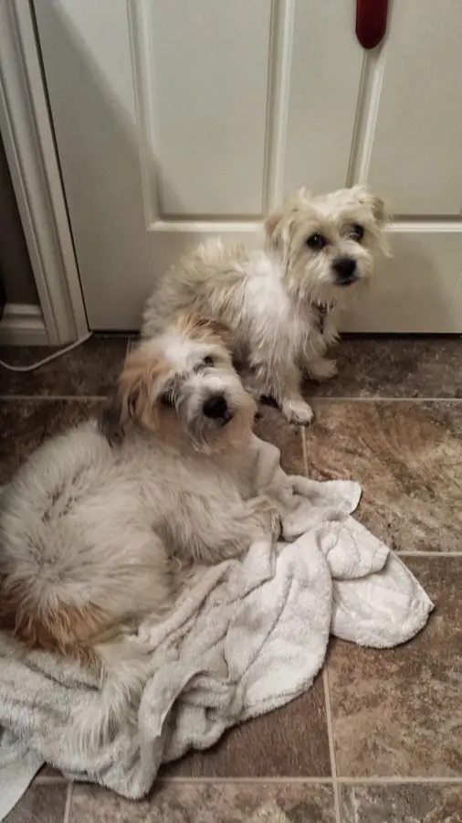

After another year at Nobu, I had an idea: go back, all the way to Saskatoon, this time alone. Almost a dare to myself: can I do the Canadian life alone?
The hardest part was Mazsi, my little wiener dog. His name means "raisin" in Hungarian. Not long after I got back to Saskatoon, he had an accident, and I never got to say goodbye to him. It's still sad even to think about it.
Show 2 photos


I landed back in Saskatoon and found work at a Brazilian steakhouse, and I had some really fun times there. I barely had to carry plates. My job was mostly to explain how a Brazilian steakhouse works and describe the different cuts of meat, send people to the salad bar, and then simply chat with the guests. It was the only Brazilian steakhouse in Saskatoon, with a cozy atmosphere, a fireplace, 12 kinds of meat, roasted pineapple and really good wine.
It's a little crazy that my wife was also in Saskatoon by then, and we never once ran into each other. Maybe because she was vegetarian and I worked in a Brazilian steakhouse.
I had a few shorter relationships in those days, and of course they didn't end well. Then one day the mother of our hostess came in for dinner. I literally asked the hostess if she could hook me up with her mom, and to my great surprise, she did.
Her mom, J., and I became a couple, and we had some really great times in Saskatoon. We even got two dogs, a brother and sister named Daisy and Duke.
Show 4 photos




About a year later, an opportunity in the Cayman Islands came up for her first. J. is a dental hygienist, and they were looking for a Canadian one, so she got the job immediately. Then I got a job almost immediately too, thanks to Nobu: the Ritz-Carlton Cayman Islands was looking for someone with sushi experience, and my background stood out. A few months later, off we went. Thankfully we found a nice couple to take care of Daisy and Duke, because bringing dogs to the Cayman Islands is nearly impossible.
Enjoyed this? Leave me a note.
Sign the guest book